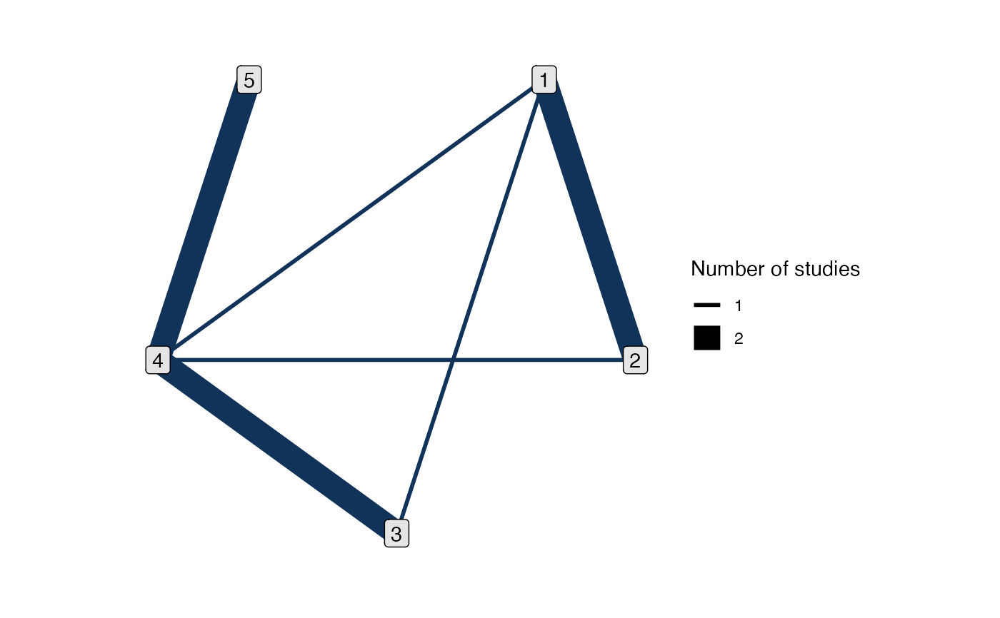

Determine whether two treatments in a network are connected by direct and/or indirect evidence, and generate a list of comparisons with both direct and indirect evidence (i.e. potential inconsistency) for node-splitting.
Usage
get_nodesplits(network, include_consistency = FALSE)
has_direct(network, trt1, trt2)
has_indirect(network, trt1, trt2)Arguments
- network
An
nma_dataobject, as created by the functionsset_*()orcombine_network().- include_consistency
Logical, whether to include a row of
NAs to indicate that a consistency model (i.e. a model with no node-splitting) should also be fitted by thenma()function. Default isFALSEwhen callingget_nodesplits()by hand, andnma()sets this toTRUEby default.- trt1, trt2
Treatments, each as a single integer, string, or factor
Value
For has_direct() and has_indirect(), a single logical value. For
get_nodesplits(), a data frame with two columns giving the comparisons
for node-splitting.
Details
The list of comparisons for node-splitting is generated following the algorithm of Valkenhoef2016;textualmultinma. A comparison between two treatments has the potential for inconsistency, and is thus considered for node-splitting, if the comparison has both direct evidence and independent indirect evidence.
The notion of independent indirect evidence is necessary when multi-arm
trials are present, since by design these trials are internally consistent.
A comparison between two treatments has independent indirect evidence if,
after removing all studies comparing the two treatments from the network,
the two treatments are still connected by a path of evidence. This is the
criterion considered by the has_indirect() function.
Examples
# Parkinsons example
park_net <- set_agd_arm(parkinsons,
study = studyn,
trt = trtn,
y = y,
se = se,
trt_ref = 1)
#> Note: Optional argument `sample_size` not provided, some features may not be available (see ?set_agd_arm).
# View the network plot
plot(park_net)

# The 4 vs. 5 comparison is a spur on the network
has_direct(park_net, 4, 5)
#> [1] TRUE
has_indirect(park_net, 4, 5)
#> [1] FALSE
# 1 and 5 are not directly connected
has_direct(park_net, 1, 5)
#> [1] FALSE
has_indirect(park_net, 1, 5)
#> [1] TRUE
# The 1 vs. 2 comparison does not have independent indirect evidence, since
# the 1-2-4 loop is a multi-arm study
has_indirect(park_net, 1, 2)
#> [1] FALSE
# Get a list of comparisons with potential inconsistency for node-splitting
get_nodesplits(park_net)
#> # A tibble: 4 × 2
#> trt1 trt2
#> <fct> <fct>
#> 1 1 3
#> 2 1 4
#> 3 2 4
#> 4 3 4
# See van Valkenhoef (2016) for a discussion of this example